Productos ambientales
Sistemas modulares de tratamiento, equipos de monitoreo remoto y soluciones llave en mano para tus operaciones.
Conversar sobre productosIngeniera química · Proyectos, productos y servicios ambientales
Lidero negocios que cuidan el presente y construyen un futuro mejor.
Más de 17 años de experiencia en proyectos, productos y servicios para los sectores minero, industrial, petrolero y ambiental.
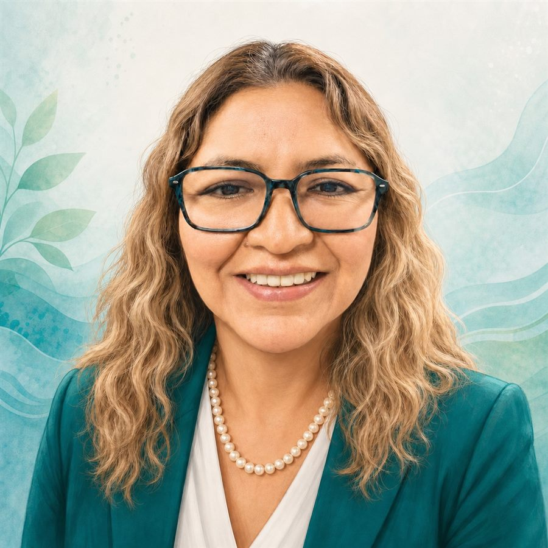
Soy ingeniera química y he liderado negocios, proyectos y equipos multidisciplinarios en los sectores minero, industrial, petrolero y ambiental. Combino conocimiento técnico con un liderazgo cercano: escucho, acompaño y ayudo a que cada equipo convierta sus ideas en resultados — cuidando siempre a las personas y a la naturaleza.
“Podemos generar valor para las empresas mientras cuidamos la naturaleza y contribuimos al bienestar de las personas.”
Así se ve, en el día a día, llevar un proyecto ambiental de la idea a la acción.
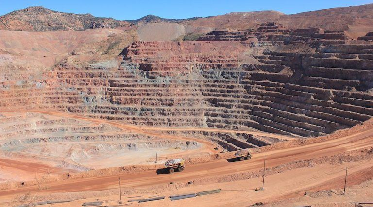
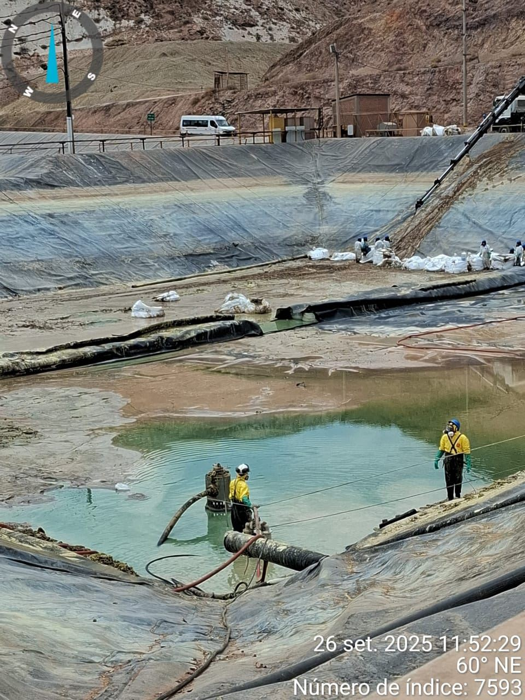
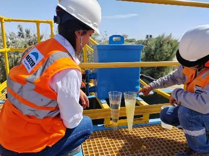
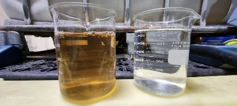
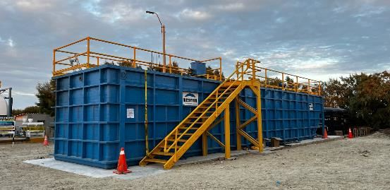
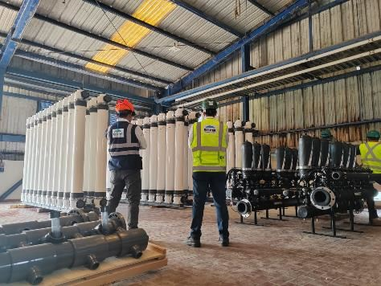
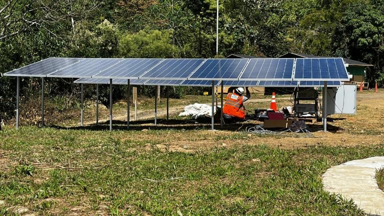
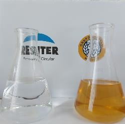
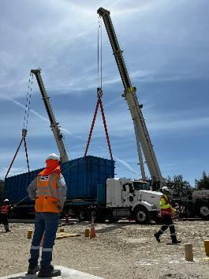
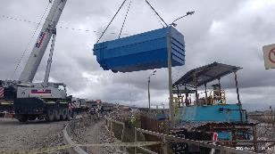
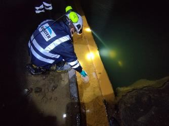
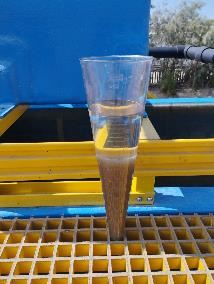
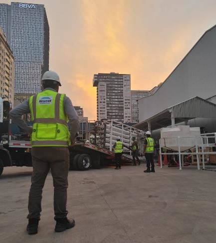
Agua de reúso: así se transforma el agua residual tratada en un recurso limpio y reutilizable.
Conversemos sobre lo que necesitas — elige la opción que más se ajuste y te escribo directamente por WhatsApp.
Sistemas modulares de tratamiento, equipos de monitoreo remoto y soluciones llave en mano para tus operaciones.
Conversar sobre productosDiagnóstico, diseño, implementación y operación de proyectos, obras y suministros medioambientales.
Conversar sobre serviciosAcompañamiento a personas y equipos para fortalecer el liderazgo y convertir ideas en resultados.
Agendar una asesoría¿Prefieres el correo? Escríbeme a quimirocio@hotmail.com
Lagunas, ríos y peces: así se ve, en la naturaleza, el resultado de un proyecto ambiental bien hecho.
Aguas en calma que reflejan equilibrio y buen manejo de los recursos hídricos.
Cauces vivos que conectan territorios, comunidades y ecosistemas.
La señal más clara de que un ecosistema hídrico está bien cuidado.
Si tienes una idea, un desafío ambiental o buscas fortalecer el liderazgo de tu equipo, estaré encantada de escucharte.